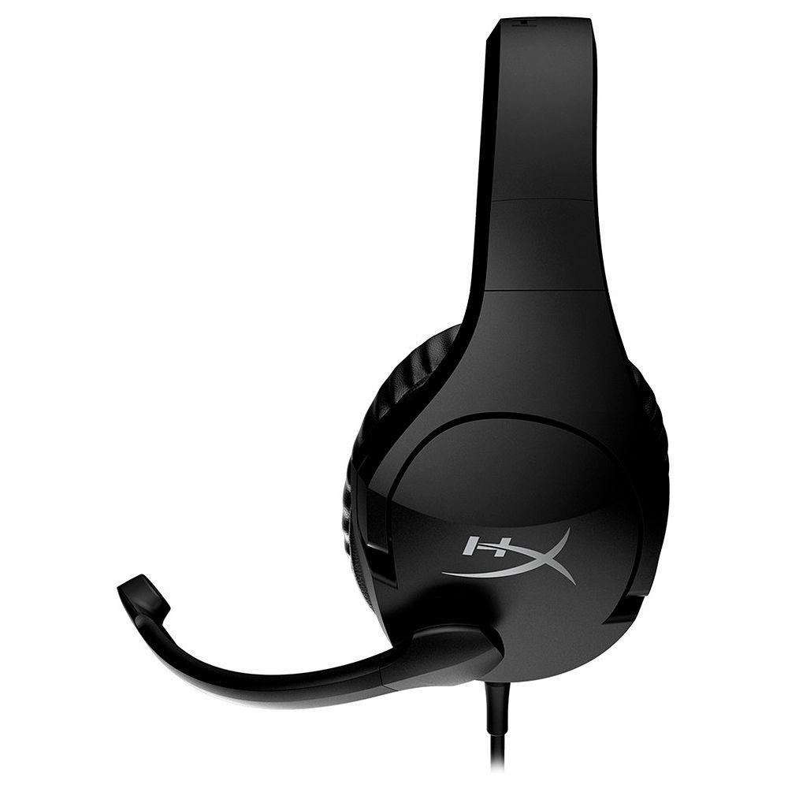
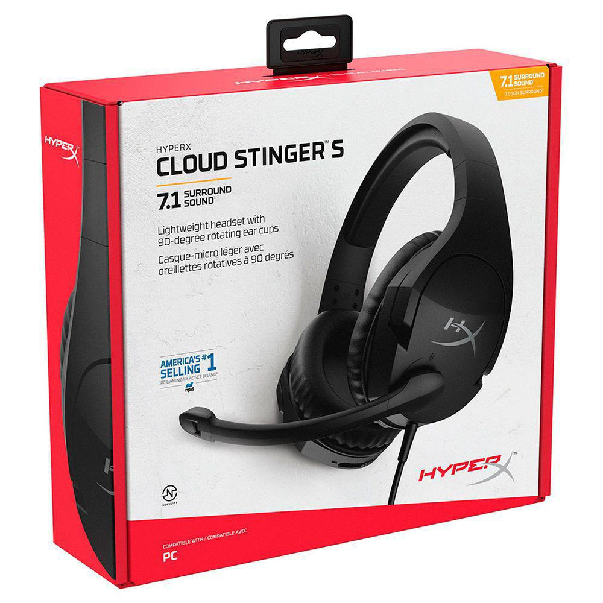

 
Headset Gamer HyperX Cloud Stinger S 7.1 Surround Black HSS1S-AA-BK/G
R$ 435,55
Comprar
10% OFF no pagamento via PIX ou 1x no cartão
R$ 435,55 em até 12x de R$ 36,30 sem juros no cartão de crédito.
Descrição do produto:
HEADSET GAMER HYPERX CLOUD STINGER S, 7.1 SURROUND, 3.5mm OU USB, 50mm, BLACK Com o HyperX Cloud Stinger™ S você fica imerso no jogo com som surround1 virtual 7.1 via software NGENUITY. Drivers direcionais de 50 mm proporcionam som de alta qualidade com precisão de áudio. Ele é leve e apresenta a exclusiva espuma inteligente HyperX e couro sintético macio para seu maior conforto durante as longas sessões de jogos. Seus fones de ouvido giram 90° para se apoiarem confortavelmente em torno do pescoço durante os intervalos. Para ajustes rápidos no áudio, o headset possui um botão de volume no fone de ouvido e um microfone com cancelamento de ruído que pode ser silenciado quando girado para cima. SOM SURROUND VIRTUAL 7.1 Obtenha mais imersão e melhor áudio de localização com som surround virtual 7.1 proporcionado pelo software HyperX NGENUITY. IMERSÃO TOTAL Os drivers de 50 mm são posicionados paralelamente ao ouvido para otimizar a qualidade do som. A reprodução aprimorada do baixo com agudos nítidos, médios claros e graves vibrantes o manterá imerso no jogo. CONFORTO HYPERX Couro sintético macio e maleável e densa espuma inteligente são confortáveis até durante maratonas de jogos.
Informações tecnicas
Marca: HyperX Modelo: HSS1S-AA-BK/G FONE DE OUVIDO Driver: Dinâmico, 50 mm com magnetos de neodímio Tipo: Circumaural, Circumaural, fechado Resposta de frequência: 18Hz-23,000Hz Impedância: 30 Nível de pressão sonora: 102 ± 3dBSPL/mW a 1kHz T.H.D.: < 2% Potência de entrada: Classificação 30mW, Máxima 500mW Tipo e comprimento do fio: Headset (1,3 m) + cabo de extensão em Y (1,7 m) Conexão: Headset plugue de 3,5 mm (4 polos) + cabo de extensão plugues de 3,5 mm estéreo e de microfone MICROFONE Elemento: Microfone condensador Electret Padrão polar: Uni-direcional, cancelamento de ruído Resposta de frequência: 50Hz~18.000Hz Sensibilidade: -40 dBV (0dB=1V/Pa,1kHz)
Garantia do Fornecedor
12 meses
Garantia:
Sem Garantia
Peso:
700 gramas (bruto com embalagem)